Guide
Installing Folding@Home (Windows) Tutorial
1. Open your web browser and navigate to: foldingathome.org
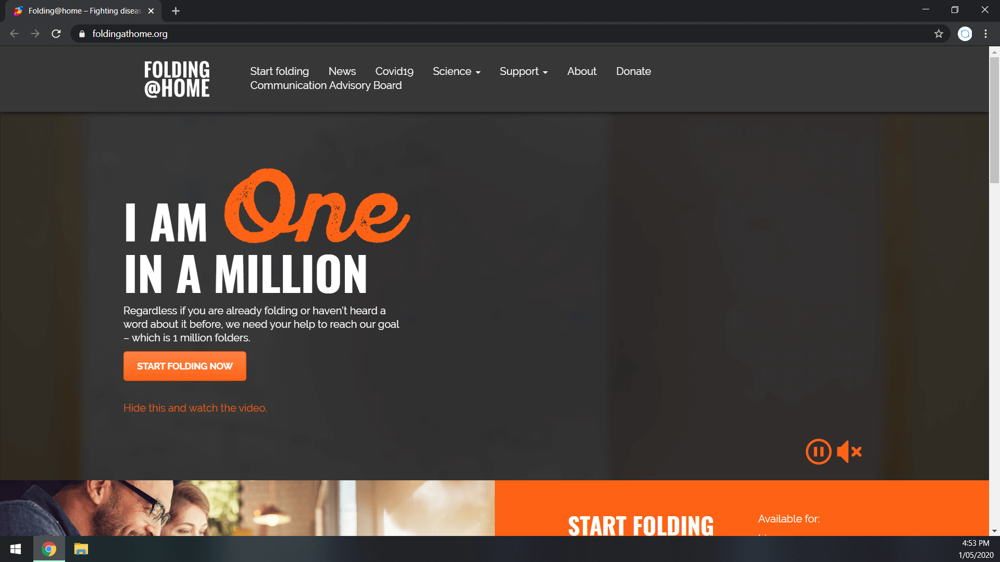
2. Click the “Start Folding Now” button
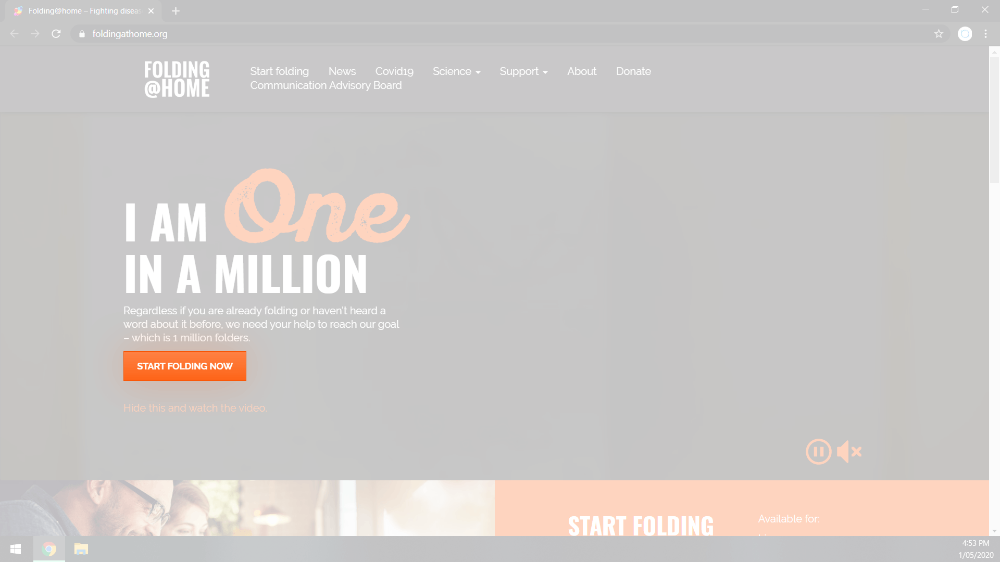
3. Click “Download Now” in blue
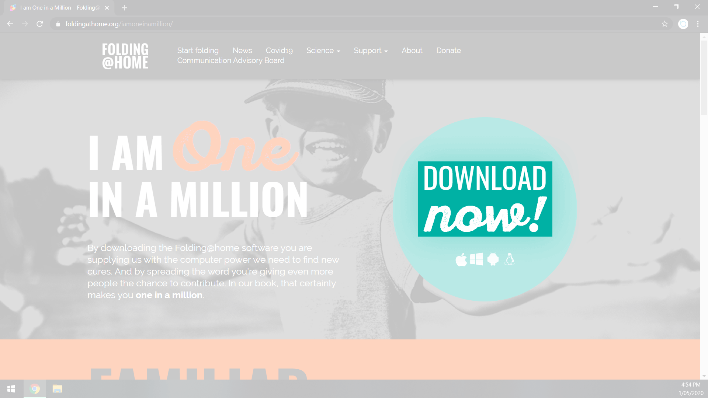
4. Under “Windows”, choose the “fah_installer” to download Folding@Home
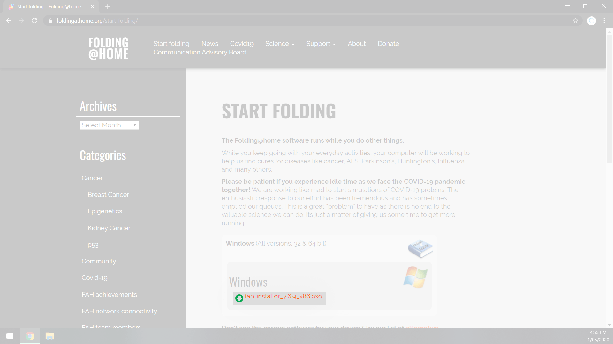
5. Once the download has completed, open the downloaded file to run the Folding@Home installer
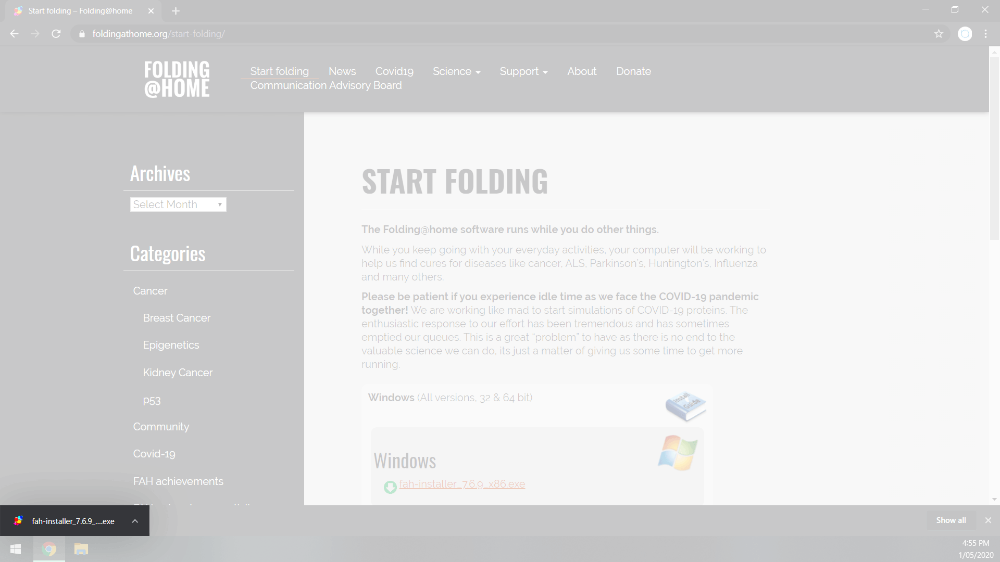
6. Click “Next” to proceed
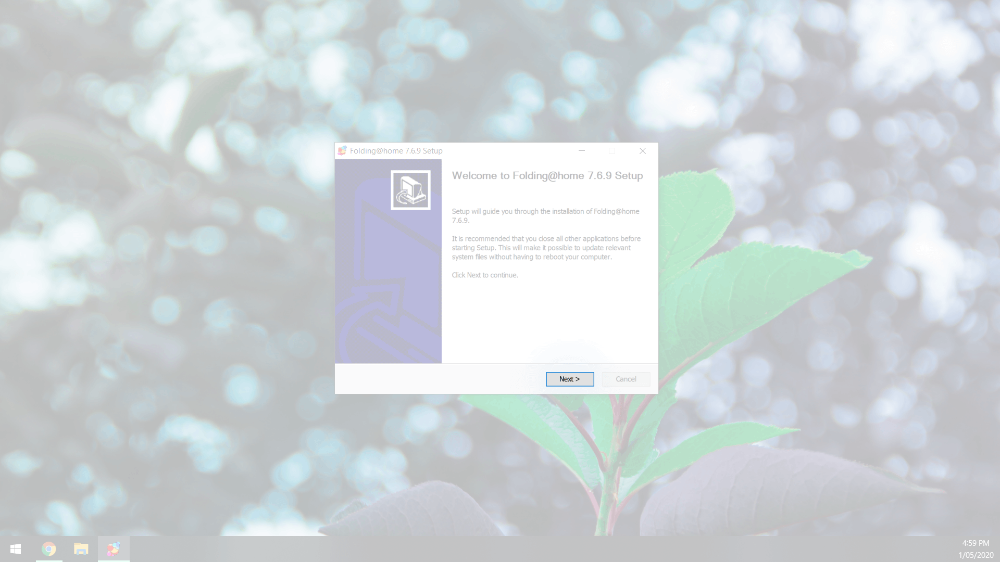
7. Read and, if you agree, choose “I Agree”
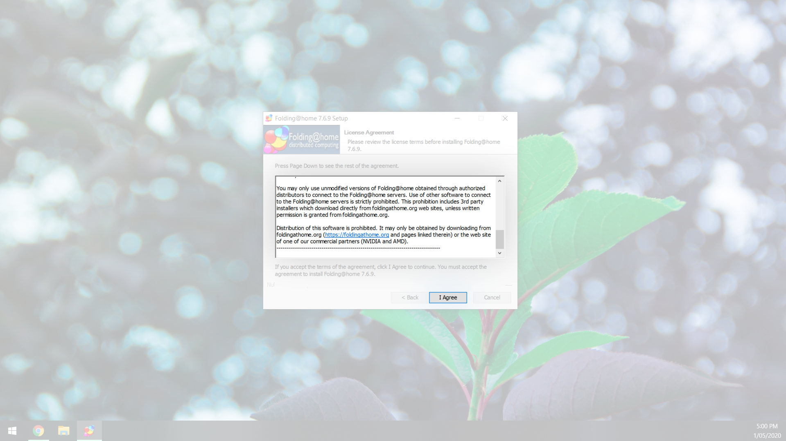
8. Leave the default option “Express Install (Recommended)” selected and click “Next”
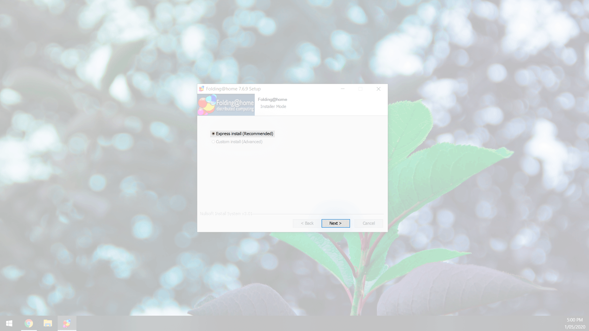
9. Once the installation has completed, make sure “Start Folding@Home” is checked and click “Finish”
Joining Team GOC
1. When your browser reopens, choose “Set up an identity”, then “Start Folding”
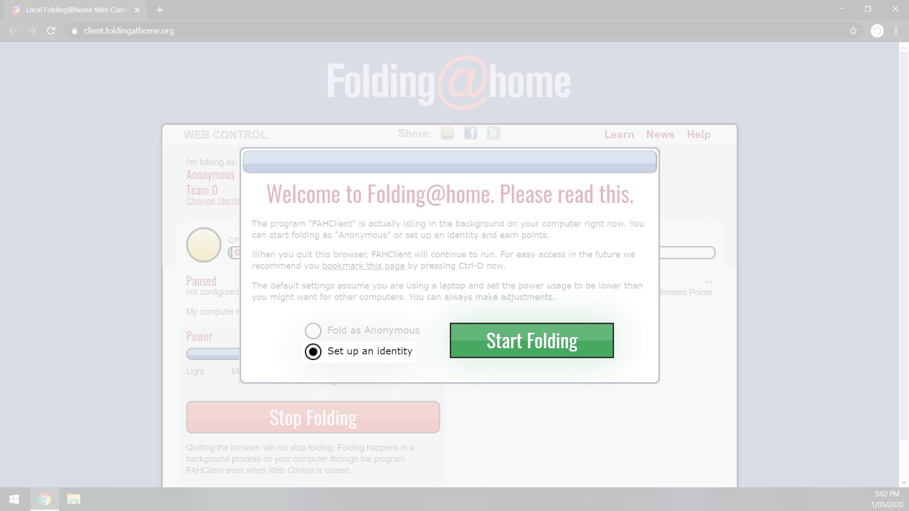
2. Under “Name”, enter your UserName. Under "Team Number" enter 247377, then click "Save"
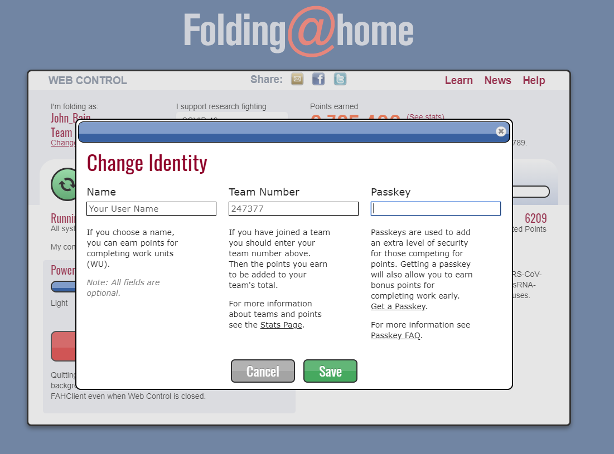
3. Under “I support research fighting”, open the dropdown and choose "COVID-19"
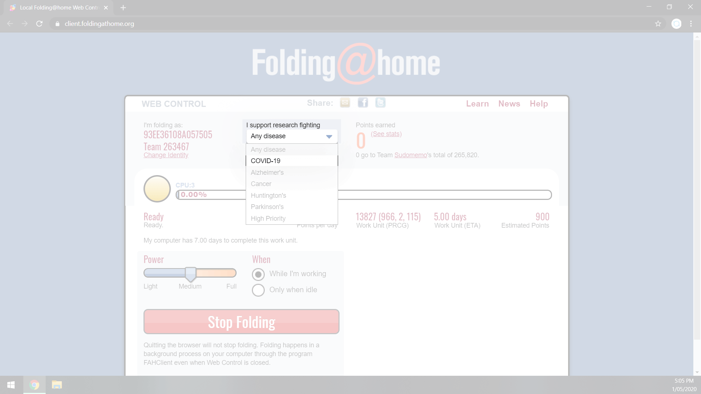
4. That’s it! You are now part of TEAM GOC folding team!
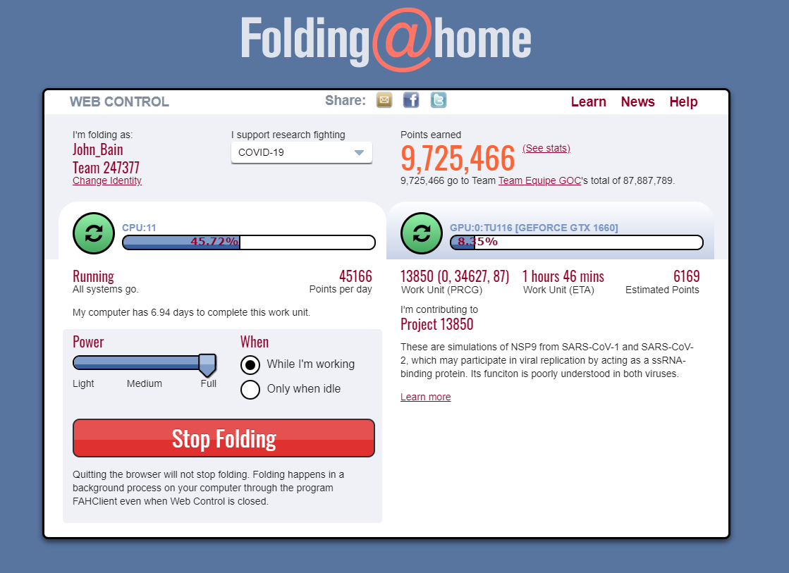
Tips for Managing Resources Between Working and Folding
- Experiment with the POWER and WHEN settings the fit your situation best.
- For the least hastle and best performance set the client to "Full Power" and "Only when Idle"
- Leave you computer running even when you are not using it but turn the monitors off. This will decrease energy consumption.
- Turn off any screen savers you might have, this frees up more compute power for Folding.
- If you are going to be leaving your computer for a long time set the client to "Full Power" and "while I am working"
- If you are starting your workday and worried about competing resources you can choose "Stop Folding", but consider the option to "Finish up folding, then stop". This works well if you have 30 min left of folding to finsih the Work Unit.
- In the client note the "My computer has X days to complete this work unit". If you shutdown or stop folding, X is the length of time you have to complete the work unit. If you miss this cut off, you might not get the points and the job will be passed to someone else.
- Date modified: